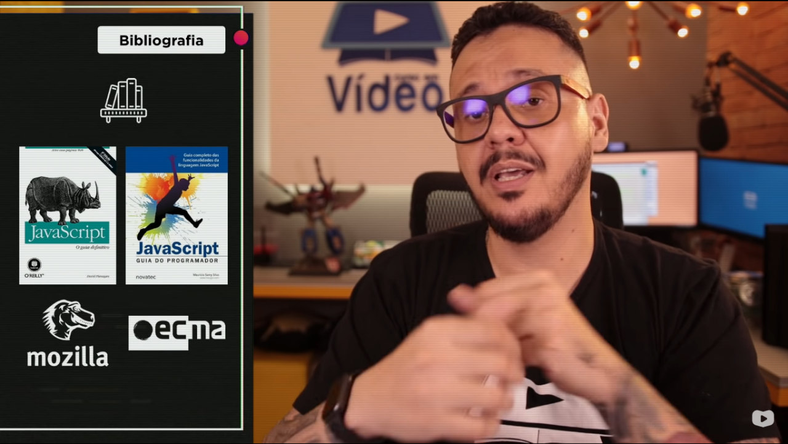

Professor explicando como aprender a programar, falando de que não adianta só assistir um vídeo tocando violão ou ver vídeos de manobra de bicicleta que iremos aprender algo, na verdade a prática é essencial para aprender a prorgamar.
Dicas para aprender:
Bibliografia utilizada no curso e recomendada pelo professor Gustavo Guanabara
